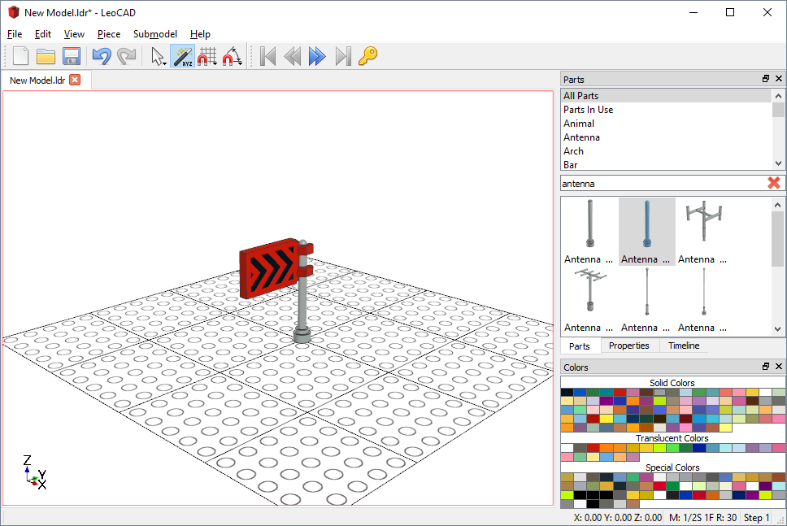
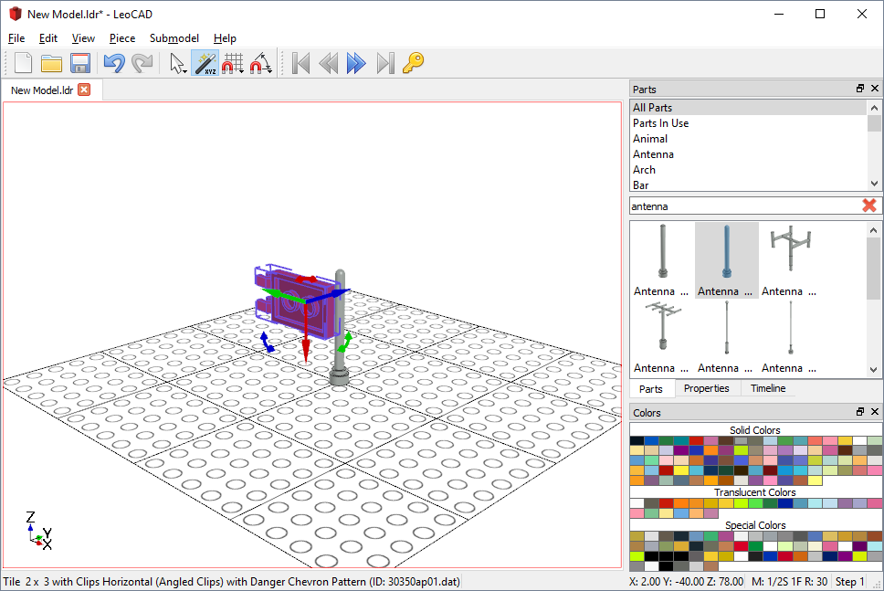
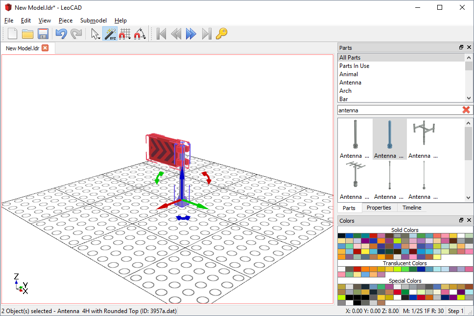
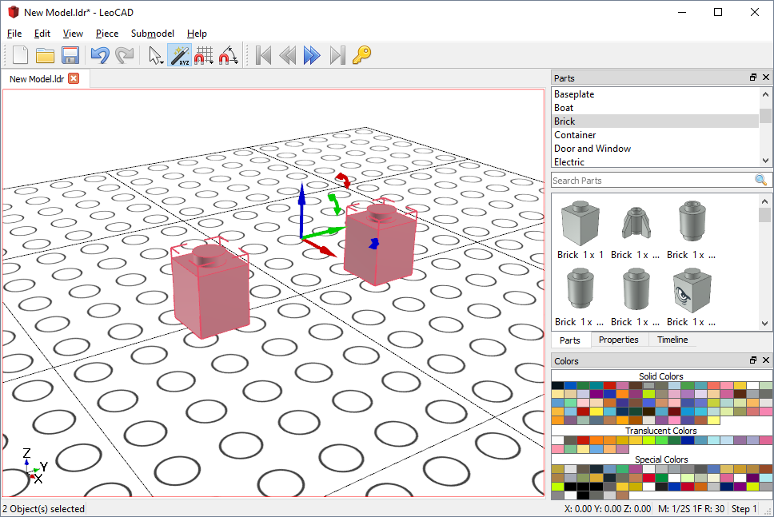
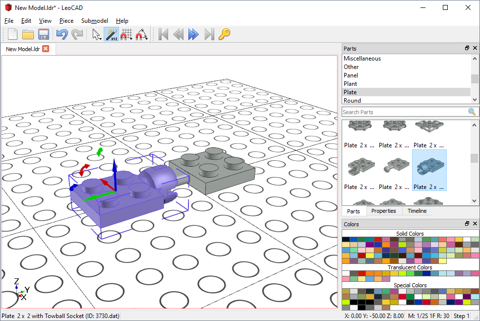
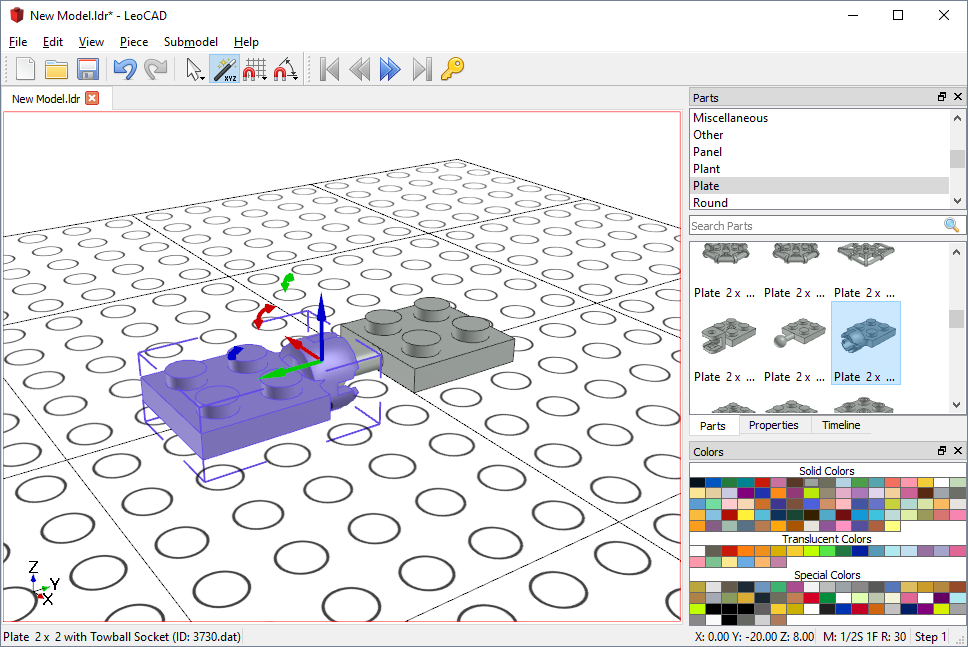
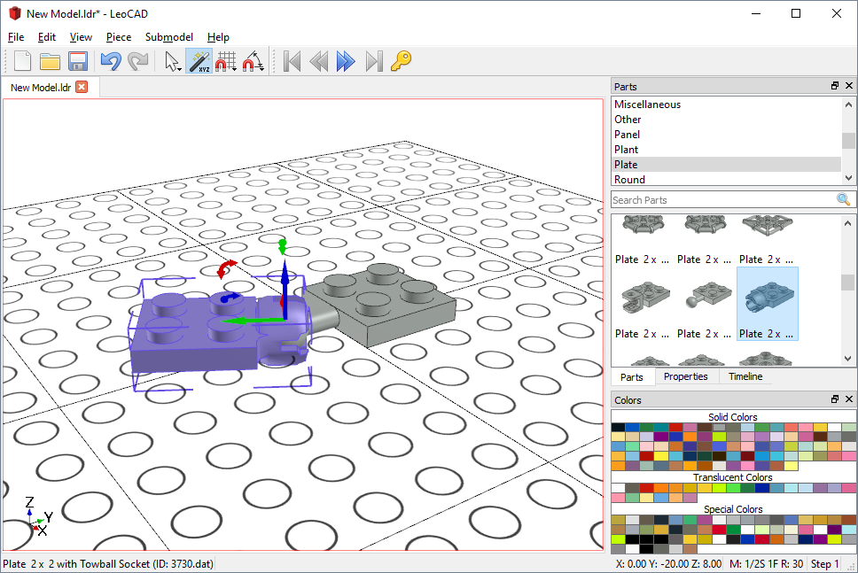

Rotation Center
LeoCAD has multiple ways of changing the center of rotation of any part in a model, so that you can more easily position them.
Using a Helper Part
Suppose that you are trying to build a flag like this one but decides that you want it at another angle instead.

You select it and notice that the origin of the part is near its center and not at the center of clips. Rotating it like this will not yield proper results:

Whenever a part has focus (blue tint), LeoCAD will use that part as the center of rotation for all selected parts. This means that we can often use a helper part to change the center of rotation of the part we want to rotate.
Let's try that with our flag: Select the flag and then the antenna with your mouse, while holding the CTRL key down. Notice that the center of rotation is now the antenna, and the flag can be rotated correctly:

Note: If one or more parts are selected but none of them have focus, the center of rotation will be at the physical center of all selected parts:

Changing the Pivot Point
Now let's look at a more complicated example of a towball and socket. In this case, neither part has its origin where we want to rotate it and we don't have a helper part to use:

LeoCAD allows you to change pivot point of any part by clicking on the movement arrows with the right mouse button and dragging:

Now that the pivot point is at the center of the socket that part can be rotated around it:
